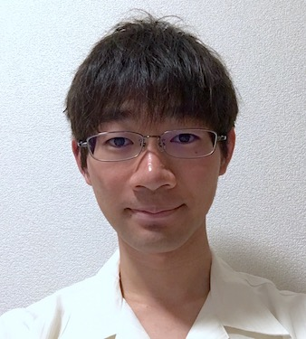
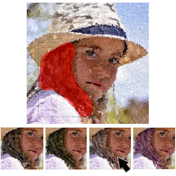

|  |
小玉 周平 / PhD student東京電機大学先端科学技術研究科 情報通信メディア工学専攻 ビジュアルコンピューティング研究室 email: s-kodama (at) vcl.jp [English] |
Projects
|  |
Creativity Enhancement of Painterly Rendering using a Suggestive Interface Shuhei Kodama, Pierre Poulin, Tomoaki Moriya, Tokiichiro Takahashi Computers & Graphics |
Publications
Peer-Reviewed Journal Papers
- Shuhei Kodama, Pierre Poulin, Tomoaki Moriya and Tokiichiro Takahashi: Creativity Enhancement of Painterly Rendering using a Suggestive Interface, Computers & Graphics, xx, xx, (to appear)
Peer-Reviewed Short Papers and Posters
-
Yuta Yamabe, Shuhei Kodama, Tomoaki Moriya, Yuki Morimoto and Tokiichiro Takahashi: Evaluation of Randomness and Uniformity of Painterly Style Image Generation Methods, Proc. of the International Workshop on Advanced Image Technology 2017 (IWAIT 2017), no. 3D-5, 2017.
-
Shuhei Kodama, Tokiichiro Takahashi: Suggestive Painterly Style Image Generation System to Satisfy User Preferences, ACM SIGGRAPH 2016 Posters, no. 17, 2016.
-
Yuta Yamabe, Shuhei Kodama, Tomoaki Moriya, Yuki Morimoto and Tokiichiro Takahashi: Fast Painterly Style Image Generation Based On Fast Sampling by Paving Disks with Random Radii, Proc. of the International Workshop on Advanced Image Technology 2016 (IWAIT 2016), no. 1B-1, 2016.
-
Shuhei Kodama, Junichi Sugita, Tomoaki Moriya and Tokiichiro Takahashi: Fast Generation of Various Painterly Style Images Based on Scalable Poisson Disk Pre-Sampling Technique, Proc. of 2015 Joint Conference of International Workshop on Advanced Image Technology and International Forum on Medical Imaging in Asia 2015 (IWAIT and IFMIA 2015), no. 373, 2015.
雑誌論文（レター・審査あり）
- 野澤 奈央, 小玉 周平, 森谷 友昭, 高橋 時市郎: 個人の足裏に合う足裏用反射区マット作成, 映像情報メディア学会誌, vol.71, no.11, pp.J272-J275, 2017.
国内会議（登壇発表・審査なし）
-
山邉 悠太, 小玉 周平, 森谷 友昭, 森本 有紀, 高橋 時市郎: Random Disk Paving法のランダムさと均一性の評価, 映像情報メディア学会 年次大会 2016, 34B-2, 2016.
-
小玉 周平, 森谷 友昭, 高橋 時市郎: Scalable Poisson Disk Sampling 分布のインタラクティブな編集と絵画生成手法への応用, 映像情報メディア学会技術報告, vol.39, no.31, pp.21-24, 2015.
-
山邉 悠太, 小玉 周平, 森谷 友昭, 森本 有紀, 高橋 時市郎: ランダムな半径を持つ円の敷詰めによる高速サンプリング法と絵画風画像生成への応用, 映像情報メディア学会 年次大会 2015, 21D-1, 2015.
-
小玉 周平, 杉田 純一, 森谷 友昭, 高橋 時市郎: Scalable Poisson Disk Pre-Sampling 法による絵画風画像の高速生成, 映像情報メディア学会技術報告, vol.38, no.33, pp.17-20, 2014.
-
小玉 周平, 森本 有紀, 森谷 友昭, 高橋 時市郎: 階層的Poisson Disk Pre-Sampled法による水彩画風画像の高速生成, 映像情報メディア学会技術報告, vol.38, no.16, pp.59-62, 2014.
国内会議（ポスター発表・審査なし）
-
野澤 奈央, 小玉 周平, 森谷 友昭, 高橋 時市郎: 個人の足裏に合う足裏用反射区マット生成,映像情報メディア学会技術報告, vol.41, no.12, pp. 175-178, 2017.
-
小玉 周平, 高橋 時市郎: ユーザの好みを反映可能な絵画風画像生成システム, Visual Computing / グラフィクスと CAD 合同シンポジウム 2016, no. 40, 2016.
-
増田 保乃花, 小玉 周平, 森本 有紀, 森谷 友昭, 高橋 時市郎: 奥行き手がかりによる線画の立体感の向上手法, 映像情報メディア学会技術報告, vol.40, no.11, pp.155-158, 2016.